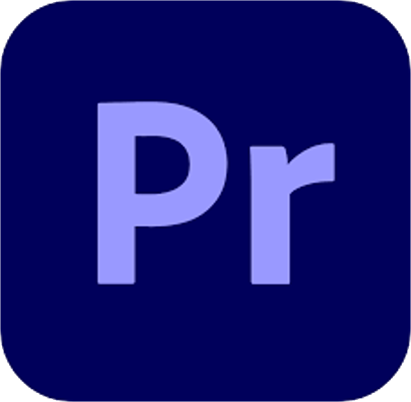

Bienvenue sur ma page web "Vidéos".
Ici vous pourrez retrouver toutes les vidéos que j'ai pu faire qu'elles soient cinématiques, gaming ou didactique.
Logiciels utilisés :

Matériels utilisés : GoPro Hero 8, DJI Mavic Air 2
Description : Mon frère, Simon est cavalier. Lors d'un transfert d'un cheval, j'ai eu l'occasion de faire une vidéo
Logiciels utilisés :
Matériels utilisés : GoPro Hero 8
Description : L'aviron étant peu médiatisé, lors d'un entrainement en Août 2021 sur le lac d'Annecy, j'ai décidé de faire une vidéo pour montrer la beauté de notre sport et de nos paysages.
Logiciels utilisés :
Matériels utilisés : DJI Mavic Air 2
Description : Durant l'été 2021, j'ai fais une video sur mon village qui se situe dans la bonlieu d'Annecy, Montagny-les-Lanches
Logiciels utilisés :
Description : Durant le 1er confinement, plusieurs amis m'ont demandés de les aider pour créer un serveur minecraft. J'ai décidé de faire une vidéo pour faciliter la tâche. Elle a fait presque un millier de vue
Cette vidéo explique comment créer un serveur Minecraft et de l'héberger pour jouer en WAN